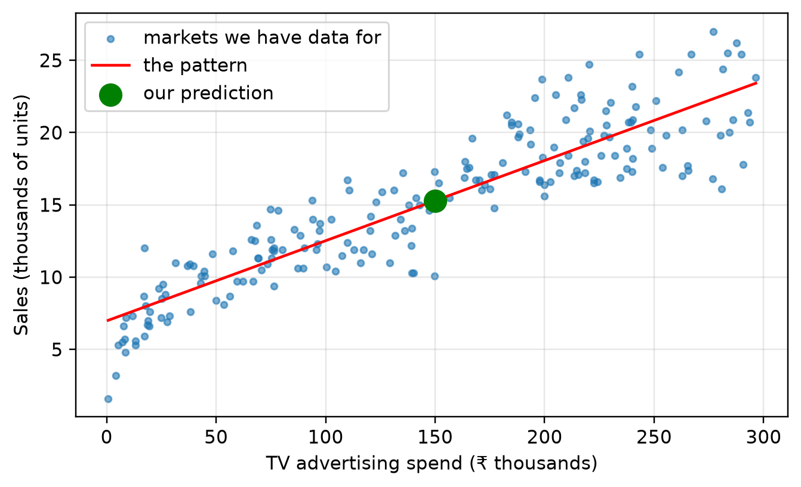
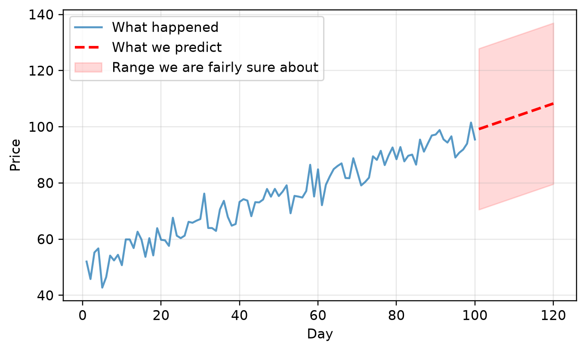

Definition · What data looks like · Evolution · AI vs ML · Roles · The lifecycle · Applications
Note
This chapter answers one question: what is data science, and what does a data scientist actually do all day?
Assumed knowledge: none. This is the first chapter. You do not need Python yet — read the code in this chapter for the shape of it, not the detail. Every line is explained properly later.
The one idea to take away: data science is a sequence of steps, not a single clever trick. This chapter walks the whole sequence once, quickly, so that the other fifteen chapters have somewhere to fit.
3.1 🎯 Learning outcomes
By the end of this chapter you can:
Define data science in plain English, without jargon.
Tell structured, semi-structured and unstructured data apart, and give an example of each.
Explain how the field grew from hand calculation to machine learning.
Place AI, machine learning, deep learning and generative AI inside one another correctly.
Name the three main data jobs and say who you would hire for a given problem.
List the seven stages of the data science lifecycle in order.
Name four things you use every day that are built with data science.
Parts A and B are ideas. Part C is the map you will follow for the rest of the course.
4 Part A — What data science is
4.1 1. Data science, defined
Data science is the practice of turning recorded facts into decisions.
You start with facts somebody wrote down — sales, clicks, temperatures, photographs. You end with a decision somebody makes because of them — restock this item, block this payment, call this patient in early.
Three things have to come together for that to work:
Ingredient
What it gives you
Without it
Programming
the ability to handle more rows than you could ever read
you are stuck with what fits on one screen
Mathematics
a way to tell a real pattern from a coincidence
you find patterns in noise
Domain knowledge
knowing what the numbers mean
you produce a correct answer to the wrong question
Data science exists because human judgement stops working at scale. You can eyeball a hundred rows. Nobody can eyeball ten million.
Tip🧠 Analogy — the master chef
The everyday thing: a chef in a busy kitchen.
The mapping:
The raw ingredients delivered at the back door are your raw data.
The knives and ovens are your programming tools.
The recipes are your mathematical methods.
The plated dish is the decision somebody acts on.
Where it breaks down: a chef uses ingredients up. Data can be used a thousand times and is still there afterwards.
4.1.1 Demo 1 — data science in seven lines
Here is the entire field, small enough to fit on a screen. A real file of 200 markets, each recording what was spent on TV advertising and what was sold. The question: if I spend ₹150,000 on TV advertising, what should I expect to sell?
Notice the first working line. The data comes from a file — datasets/advertising.csv — not from numbers typed into the program. Every demonstration in this book works that way, because that is how every real project works.
import numpy as npimport matplotlib.pyplot as pltimport pandas as pd# A real dataset: 200 markets, what was spent on TV advertising, and what sold.ads = pd.read_csv("datasets/advertising.csv")print(ads.head(3))print(f"\n{len(ads)} markets on file\n")spend = ads["TV"].values # advertising spend, in thousandssales = ads["Sales"].values # units sold, in thousandsslope, intercept = np.polyfit(spend, sales, 1) # find the best straight linepredicted = slope *150+ intercept # use it to answer the questionplt.scatter(spend, sales, s=12, alpha=.6, label="markets we have data for")grid = np.linspace(spend.min(), spend.max(), 100)plt.plot(grid, slope * grid + intercept, color="red", label="the pattern")plt.scatter([150], [predicted], color="green", s=140, zorder=5, label="our prediction")plt.xlabel("TV advertising spend (₹ thousands)")plt.ylabel("Sales (thousands of units)")plt.legend()plt.show()print(f"Spend ₹150,000 on TV and expect to sell about {predicted*1000:,.0f} units")
TV Radio Newspaper Sales
0 230.1 37.8 69.2 22.1
1 44.5 39.3 45.1 10.4
2 17.2 45.9 69.3 12.0
200 markets on file

Figure 4.1: Ten shops. A line through them. One prediction.
Spend ₹150,000 on TV and expect to sell about 15,295 units
That is the whole shape of it: data in, pattern found, question answered. Everything else in this course is doing that more carefully, on messier data.
4.1.2 Demo 2 — could five shops alone have told us this?
The fitted line used all 200 markets. Before trusting maths you cannot see, it is worth asking: could a much smaller look have hinted at the same thing?
import pandas as pdads = pd.read_csv("datasets/advertising.csv")five = ads.head()print(five[["TV", "Sales"]])cheapest = five.loc[five["TV"].idxmin()]priciest = five.loc[five["TV"].idxmax()]print(f"\nLeast spent: ₹{cheapest['TV']*1000:,.0f} on TV -> sold {cheapest['Sales']*1000:,.0f} units")print(f"Most spent : ₹{priciest['TV']*1000:,.0f} on TV -> sold {priciest['Sales']*1000:,.0f} units")
TV Sales
0 230.1 22.1
1 44.5 10.4
2 17.2 12.0
3 151.5 16.5
4 180.8 17.9
Least spent: ₹17,200 on TV -> sold 12,000 units
Most spent : ₹230,100 on TV -> sold 22,100 units
Five rows already hint at the pattern — more spend, more sales. But a hint is not a measurement: five rows could easily be a coincidence, and there is no way to turn “more spend, more sales” into a number you can act on without the maths behind Demo 1. Noticing a pattern and being able to use it are two different skills, and data science is mostly the second one.
We have said “data” a dozen times. It is worth being precise about what that word covers, because it is wider than a spreadsheet.
4.2 2. The three kinds of data
Data comes in three shapes, and the shape decides how much work you have to do before you can analyse it.
Kind
What it looks like
Examples
Effort to analyse
Structured
rows and columns, every row the same shape
spreadsheets, CSV files, SQL tables
low
Semi-structured
has labels, but rows can differ
JSON, XML, log files
medium
Unstructured
no rows or labels at all
text, photographs, audio, video
high
Most of this course works with structured data, because that is where the ideas are clearest. The techniques for the other two are the same ideas with more preparation in front of them.
4.2.1 Demo 3 — the same facts in three files
The same three orders, stored three different ways: orders.csv, orders.json and order_notes.txt. Three files, three loaders — and the work rises sharply from the first to the last.
import pandas as pdimport json# STRUCTURED — a .csv file. Every row has exactly the same columns.structured = pd.read_csv("datasets/orders.csv")print("STRUCTURED (datasets/orders.csv)")print(structured)# SEMI-STRUCTURED — a .json file. Labelled, but the records differ.semi = json.loads(open("datasets/orders.json").read())print("\nSEMI-STRUCTURED (datasets/orders.json)")print(json.dumps(semi, indent=1))# UNSTRUCTURED — a .txt file. Human sentences, nothing labelled.unstructured =open("datasets/order_notes.txt").read()print("\nUNSTRUCTURED (datasets/order_notes.txt)")print(unstructured)
STRUCTURED (datasets/orders.csv)
order_id customer amount
0 1 Alice 250.0
1 2 Bob 90.0
2 3 Chan 410.0
SEMI-STRUCTURED (datasets/orders.json)
[
{
"order_id": 1,
"customer": "Alice",
"amount": 250.0
},
{
"order_id": 2,
"customer": "Bob",
"amount": 90.0,
"gift_wrap": true
},
{
"order_id": 3,
"customer": "Chan",
"amount": 410.0,
"delivery": {
"city": "Mumbai",
"express": false
}
}
]
UNSTRUCTURED (datasets/order_notes.txt)
Alice ordered two books on Tuesday and paid 250 rupees.
Bob picked up a single notebook for 90; he asked for it gift wrapped.
Chan spent four hundred and ten rupees on stationery, delivered to Mumbai.
Look at what changes. In the CSV, “what did Alice pay?” is one lookup. In the JSON it is still easy, but your code must cope with gift_wrap and delivery existing on some records and not others — and delivery is itself a record inside a record. In the text file the number 250 is just characters; a program has to be taught that it is money before it can add it up.
Warning⚠️ Semi-structured data breaks code that assumes a fixed shape
Loading the JSON above into a table gives Alice a gift_wrap value of NaN — “not recorded”. Code that assumes every record has every field will crash or, worse, quietly skip records. Check the shape of every record, not just the first one.
# What happens when you force semi-structured data into a table:print(pd.DataFrame(semi))
order_id customer amount gift_wrap delivery
0 1 Alice 250.0 NaN NaN
1 2 Bob 90.0 True NaN
2 3 Chan 410.0 NaN {'city': 'Mumbai', 'express': False}
Blanks where a field was absent, and one column holding a whole nested record. pd.json_normalize flattens the nesting into columns of its own:
print(pd.json_normalize(semi))
order_id customer amount gift_wrap delivery.city delivery.express
0 1 Alice 250.0 NaN NaN NaN
1 2 Bob 90.0 True NaN NaN
2 3 Chan 410.0 NaN Mumbai False
4.2.2 Demo 4 — what “effort to analyse” costs, in numbers
The table above said effort rises from structured to unstructured. Here it is as an actual number: add up the total order value from each of the three files.
import pandas as pdimport jsonimport re# CSV: the column already exists. The total is one line.structured = pd.read_csv("datasets/orders.csv")print(f"Structured total (orders.csv) : ₹{structured['amount'].sum():,.0f}")# JSON: normalise into a table first, then the same one line works.semi = json.loads(open("datasets/orders.json").read())semi_table = pd.json_normalize(semi)print(f"Semi-structured total (orders.json) : ₹{semi_table['amount'].sum():,.0f}")# Text: there is no "amount" column, only sentences. Pull out whatever looks like a number.notes =open("datasets/order_notes.txt").read()numbers_found = re.findall(r"\b\d+\b", notes)print(f"\nDigits found in the text file: {numbers_found}")print(f"Unstructured total, naive guess (order_notes.txt): ₹{sum(int(n) for n in numbers_found):,.0f}")
Structured total (orders.csv) : ₹750
Semi-structured total (orders.json) : ₹750
Digits found in the text file: ['250', '90']
Unstructured total, naive guess (order_notes.txt): ₹340
The CSV and the JSON agree: ₹750. The text file’s naive total is ₹340 — not close, and wrong without raising any error. Chan’s ₹410 was written as words (“four hundred and ten”), and a search for digits cannot see it. Getting the real total out of free text needs code that understands English, which is a far bigger job than reading a column.
5 Part B — Where it came from
5.1 3. How the field grew
Data science did not appear suddenly. It is statistics, plus two things statistics never had: enormous amounts of data, and cheap computing.
Era
Data available
The hard part
Typical method
Statistics (before ~2000)
small, carefully collected samples
collecting data at all
averages, hypothesis tests, done by hand
Big data (~2000–2010)
huge, collected automatically
storing and querying it
databases, Hadoop, SQL
Machine learning (~2010–now)
huge, and cheap to process
choosing what to learn
algorithms that find the pattern themselves
Generative AI (~2020–now)
the whole internet
steering the output
very large models that produce text and images
The shift that matters: early on, a human proposed the pattern and used data to test it. Now the machine proposes the pattern and the human tests it.
Warning⚠️ Newer is not better
An average — a technique from the 1800s — solves a great many business problems faster and more reliably than a neural network. Always try the simple method first, and keep it as the score your complicated method has to beat. A model that cannot beat an average has not worked.
5.1.1 Demo 5 — the simple method is hard to beat
Two ways to predict tomorrow’s demand. The plain one: the average of every past day. The reactive one: whatever happened yesterday. Judge them over sixty days, not one — on a single day either can win by luck.
import numpy as npimport pandas as pddemand = pd.read_csv("datasets/daily_demand.csv")["units_sold"].valuesprint(f"{len(demand)} days of recorded demand, averaging {demand.mean():.1f} units\n")avg_errors, yest_errors = [], []for day inrange(60, len(demand)): history = demand[:day] avg_errors.append(abs(demand[day] - history.mean())) # predict the running average yest_errors.append(abs(demand[day] - demand[day -1])) # predict yesterday's valueprint(f"Predicting with the running average : average error {np.mean(avg_errors):5.2f}")print(f"Predicting with yesterday's value : average error {np.mean(yest_errors):5.2f}")print(f"\nThe average was better on {np.mean(np.array(avg_errors) < np.array(yest_errors)):.0%} of days.")
400 days of recorded demand, averaging 99.6 units
Predicting with the running average : average error 9.74
Predicting with yesterday's value : average error 13.91
The average was better on 64% of days.
When data wobbles randomly around a stable level, the plain average wins, because yesterday’s wobble carries no information about today. Notice that it does not win every day — it wins on average, which is the only sense in which one method beats another. This is why a single comparison proves nothing, and why Session 11 exists.
5.1.2 Demo 6 — same race, a trending signal instead of a stable one
That test used demand that wobbles around a flat level. What if the level itself is genuinely moving? datasets/daily_price.csv — used again later in this chapter — trends upward over 100 days. Same race, different track.
import numpy as npimport pandas as pdprice = pd.read_csv("datasets/daily_price.csv")["price"].valuesavg_errors, yest_errors = [], []for day inrange(10, len(price)): history = price[:day] avg_errors.append(abs(price[day] - history.mean())) # predict the running average yest_errors.append(abs(price[day] - price[day -1])) # predict yesterday's valueprint(f"Predicting with the running average : average error {np.mean(avg_errors):5.2f}")print(f"Predicting with yesterday's value : average error {np.mean(yest_errors):5.2f}")
Predicting with the running average : average error 13.72
Predicting with yesterday's value : average error 3.98
Now yesterday’s value wins by a wide margin — 3.98 against 13.72. Once the level itself is moving, the running average is always looking back at a level the data has already left behind, while yesterday’s value at least starts close to today. “Try the simple method first” does not mean “always use the same simple method” — it means measure more than one and let the data pick.
5.2 4. AI, machine learning, deep learning, generative AI
These four words are used interchangeably in the news. They are not the same thing. They sit inside one another.
flowchart TB
AI["<b>Artificial Intelligence</b><br/>any machine doing something that<br/>would need human intelligence"]
ML["<b>Machine Learning</b><br/>the machine learns the rules from data<br/>instead of being given them"]
DL["<b>Deep Learning</b><br/>machine learning using neural networks<br/>with many layers"]
GEN["<b>Generative AI</b><br/>deep learning that produces new<br/>text, images, audio or code"]
AI --> ML --> DL --> GEN
The useful distinction is who writes the rule:
Who writes the rule
Example
Ordinary programming
you do
“if amount > 10000, flag it”
Machine learning
the machine, from examples
show it 50,000 past frauds; it works out what fraud looks like
Data science is the wider job. It includes machine learning, but it also includes collecting the data, cleaning it, exploring it, and explaining the result to somebody who has to act on it. In most real projects the machine learning is the smallest part.
6 Part C — Who does it, and how
6.1 5. The three data jobs
Building the pipes, reading the past, and predicting the future are three different jobs. Most teams split them because the skills barely overlap.
Role
Owns
Main tools
Delivers
Data engineer
getting data in, reliably
SQL, Python, cloud services
a clean, fast, trustworthy table
Data analyst
explaining what happened
SQL, spreadsheets, dashboards
a report somebody reads
Data scientist
predicting what will happen
Python, scikit-learn
a model somebody uses
Tip🧠 Analogy — the car factory
The data engineer builds the assembly line and makes sure steel arrives on time.
The data analyst counts the cars coming off it and reports how many had defects.
The data scientist works out which factory settings cause defects, so next month’s run has fewer.
Two more titles you will meet: the machine learning engineer, who takes a working model and makes it survive real traffic, and the BI developer, who builds the dashboards an analyst designs.
6.2 6. The data science lifecycle
Every data science project runs through the same seven stages, in the same order. This course is those seven stages, one at a time.
#
Stage
The question
Covered in
1
Problem definition
What decision will this change?
this chapter, and Session 16
2
Data collection
Where do the facts live?
Session 2
3
Cleaning and preparation
What is wrong with them?
Sessions 3–6
4
Exploration
What is actually in here?
Sessions 7–8
5
Modelling
What pattern can be learned?
Sessions 9–10
6
Evaluation
Is the pattern real?
Session 11
7
Deployment
How does somebody use it?
Session 12
Warning⚠️ Stage 3 is most of the work
Beginners expect modelling to take the longest. In practice, collecting and cleaning the data takes most of a project, and modelling is often an afternoon. This is why Sessions 2 to 8 — seven of sixteen — are about data rather than about algorithms.
6.2.1 Demo 7 — all seven stages in one cell
This is the entire lifecycle, on tiny data, so you can see the whole shape before we slow down and do each stage properly. You are not expected to follow the detail yet.
import pandas as pdimport numpy as npfrom sklearn.linear_model import LinearRegression# STAGE 1 — PROBLEM: predict a flat's monthly rent from its size and its age.# STAGE 2 — COLLECT: read the file somebody handed usflats = pd.read_csv("datasets/flats.csv")print(f"Stage 2 — loaded {len(flats)} flats from datasets/flats.csv")# STAGE 3 — CLEAN: one flat has no recorded size. Fill it with the middle value.flats["sqft"] = flats["sqft"].fillna(flats["sqft"].median())print(f"Stage 3 — cleaned; missing sizes remaining: {flats['sqft'].isna().sum()}")# STAGE 4 — EXPLORE: which column moves with rent?print("\nStage 4 — how strongly each column tracks rent:")print(flats.corr()["rent"].drop("rent").round(2))# STAGE 5 — MODELX = flats[["sqft", "age_yrs"]]y = flats["rent"]model = LinearRegression().fit(X, y)print(f"\nStage 5 — model trained. Rent rises about "f"₹{model.coef_[0]:.0f} for each extra square foot.")# STAGE 6 — EVALUATE: how close are its answers on flats it has seen?print(f"Stage 6 — it explains {model.score(X, y):.1%} of the variation in rent")# STAGE 7 — DEPLOY: wrap it so somebody else can ask it a question.def estimate_rent(sqft, age_yrs): row = pd.DataFrame({"sqft": [sqft], "age_yrs": [age_yrs]})return model.predict(row)[0]print(f"\nStage 7 — a 1000 sqft, 5-year-old flat: ₹{estimate_rent(1000, 5):,.0f} per month")
Stage 2 — loaded 10 flats from datasets/flats.csv
Stage 3 — cleaned; missing sizes remaining: 0
Stage 4 — how strongly each column tracks rent:
sqft 0.98
age_yrs -0.72
Name: rent, dtype: float64
Stage 5 — model trained. Rent rises about ₹18 for each extra square foot.
Stage 6 — it explains 97.4% of the variation in rent
Stage 7 — a 1000 sqft, 5-year-old flat: ₹18,527 per month
Every stage above is one line here and one chapter later. Session 3 spends a whole chapter on that single fillna, because there are six ways to do it and choosing wrongly changes the answer.
6.2.2 Demo 8 — what happens if you skip Stage 3
The callout above said Stage 3 is most of the work. Here is what happens if you skip it and jump straight from Stage 2 to Stage 5.
import pandas as pdfrom sklearn.linear_model import LinearRegressionflats_raw = pd.read_csv("datasets/flats.csv") # loaded, but never cleanedX = flats_raw[["sqft", "age_yrs"]]y = flats_raw["rent"]try: LinearRegression().fit(X, y)print("Model trained fine.")exceptValueErroras e:print("Training failed instead of silently giving a wrong answer:")print(f" {type(e).__name__}: {str(e).splitlines()[0]}")
Training failed instead of silently giving a wrong answer:
ValueError: Input X contains NaN.
scikit-learn refuses outright rather than guessing what the missing square footage should be. That is the better failure — a model trained on a silently mean-filled column would give an answer with no warning attached. Stage 3 does not just make the numbers nicer; skipping it can stop Stage 5 from running at all.
6.3 7. What it is used for
Any process that currently relies on somebody guessing can usually be improved by finding the pattern in what happened before.
Application
What it predicts
You meet it in
Recommendations
what you will watch or buy next
Netflix, Amazon, Spotify
Dynamic pricing
what you will pay
airlines, ride-hailing, hotels
Fraud detection
whether this payment is genuine
your bank, every card swipe
Medical diagnostics
whether this scan shows disease
radiology departments
Demand forecasting
how much stock to order
every large retailer
Predictive maintenance
which machine fails next
factories, airlines, railways
Route optimisation
how long the journey takes
maps, delivery firms
Credit scoring
whether a loan is repaid
lenders — and Sessions 9 and 12
6.3.1 Demo 9 — a recommendation, from scratch
Recommendation engines sound complicated. The simplest useful one is a single idea: find the person most like you, and suggest what they liked that you have not seen.
import pandas as pd# Rows are viewers, columns are films, values are ratings out of 5 (0 = not watched).ratings = pd.read_csv("datasets/film_ratings.csv", index_col="viewer")print(ratings)# How similar is each viewer to you? Count agreement across the films you have both seen.you = ratings.loc["You"]others = ratings.drop("You")similarity_scores = {}for viewer in others.index: person = others.loc[viewer] similarity_scores[viewer] = (person * you).sum()similarity = pd.Series(similarity_scores)print("\nSimilarity to you:")print(similarity.sort_values(ascending=False))closest = similarity.idxmax()unseen = ratings.columns[you ==0]print(f"\nYour closest match is {closest}.")for film in unseen:print(f" {closest} rated {film}: {ratings.loc[closest, film]}/5 → recommended")
Real systems do this across millions of users with far better similarity measures, but the idea on screen is the idea they use.
6.3.2 Demo 10 — what you will be able to build
By Session 12 you will train a model and put it behind a web page. Here is the kind of output that page will show: history, a prediction, and an honest band around it.
import numpy as npimport pandas as pdimport matplotlib.pyplot as plthistory = pd.read_csv("datasets/daily_price.csv")days, price = history["day"].values, history["price"].valuesfuture = np.arange(101, 121)slope, intercept = np.polyfit(days, price, 1)forecast = slope * future + interceptspread = price.std()plt.plot(days, price, label="What happened", alpha=0.75)plt.plot(future, forecast, "r--", lw=2, label="What we predict")plt.fill_between(future, forecast -2*spread, forecast +2*spread, color="red", alpha=0.15, label="Range we are fairly sure about")plt.xlabel("Day")plt.ylabel("Price")plt.legend()plt.show()

Figure 6.1: History in blue, prediction in red, uncertainty shaded. The shaded band is the honest part.
Warning⚠️ A prediction without a range is a guess in a suit
The dashed red line looks authoritative. The shaded band is the honest part — it says how wrong the line could reasonably be. A number reported without its uncertainty invites a decision it cannot support. Session 11 is about measuring that band.
7 🎯 Tasks
Note✏️ Do these before Session 2
Task 1 — Classify some data. For each of these, say whether it is structured, semi-structured or unstructured: a supermarket receipt photographed on your phone; the same receipt typed into a spreadsheet; your phone’s location history export; a podcast episode; a weather API response.
Task 2 — Pick the role. For a company you know well, write one specific project for a data engineer, one for a data analyst, and one for a data scientist.
Task 3 — Change a prediction. In Demo 1, change the advertising figure from 45 to 80 and run the cell. The prediction goes up. Now look at the data: the largest shop we actually observed spent 60. Write one sentence on why the prediction for 80 should be trusted less than the prediction for 45.
NoteSolutions
Task 1. Photographed receipt — unstructured (an image). Typed into a spreadsheet — structured. Location history export — semi-structured (usually JSON). Podcast — unstructured (audio). Weather API response — semi-structured (JSON).
Task 3. 45 sits inside the range we observed (10 to 60), so the line is supported by nearby real shops. 80 is beyond every shop in the data — the line has been extended into territory where we have no evidence the relationship still holds. Predicting outside the observed range is called extrapolation, and it is where models fail most confidently.
8 ❓ MCQs
Q1. Which is the most accurate description of data science?
Writing software applications for web browsers.
Turning recorded facts into decisions, using programming, mathematics and knowledge of the subject.
Reading customer emails to find complaints.
Installing and maintaining servers.
Q2. A model correctly predicts which patients will be readmitted to hospital, but the team did not realise the “discharge code” column is only filled in after a readmission is scheduled. Which ingredient was missing?
Programming.
Mathematics.
Domain knowledge.
Q3. A shop’s till software prints a discount when the total is over ₹5,000. Is this machine learning?
Yes, because a computer decided.
No — a human wrote the rule. The machine learned nothing.
Yes, because it uses customer data.
Q4. Which statement is true?
Machine learning includes artificial intelligence.
Deep learning is one kind of machine learning.
Generative AI and data science are the same thing.
Q5. Terabytes of messy log files sit on ten different servers, and nobody can query them. Who do you hire first?
Data scientist.
Data engineer.
Data analyst.
NoteAnswers
A1 — (b). (a) is software engineering, (c) is manual research, (d) is IT administration.
A2 — (c). The code ran and the maths was sound. Only somebody who knew the hospital’s process would spot that the column contains the answer.
A3 — (b). The rule was written by a person and never changes. Machine learning would be the till working out for itself, from past receipts, which customers respond to a discount.
A4 — (b). AI is the widest circle; machine learning sits inside it; deep learning sits inside machine learning; generative AI sits inside deep learning.
A5 — (b). Until the data is somewhere queryable, the other two have nothing to work with. This is the most common sequencing mistake real teams make.